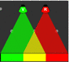
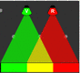

Ljussättning
Dra färgade lampor till de gråa punkterna för att återskapa Bävers ljussättning.
Använd sifforna från tabellerna som stöd.
Som hjälp har vi redan placerat två lampor.
För att få full poäng, använd endast lampor.
Dra färgade lampor till de gråa punkterna för att återskapa Bävers ljussättning.
Använd sifforna från tabellerna som stöd.
Som hjälp har vi redan placerat två lampor.
För att få full poäng, använd endast lampor.
 
